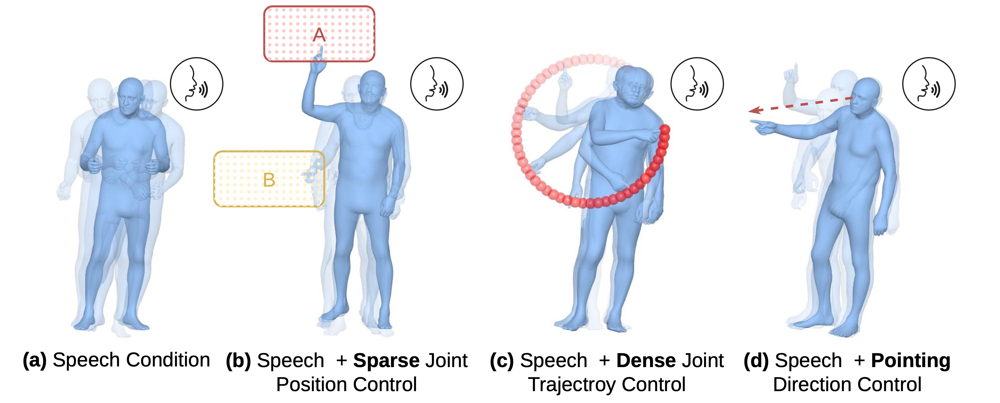
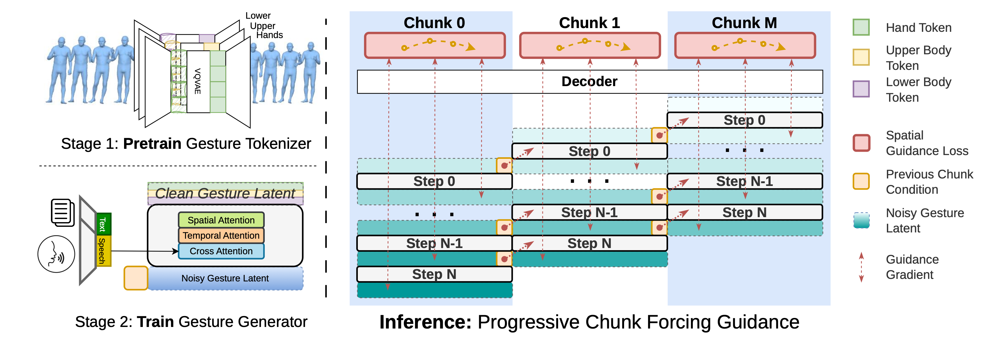
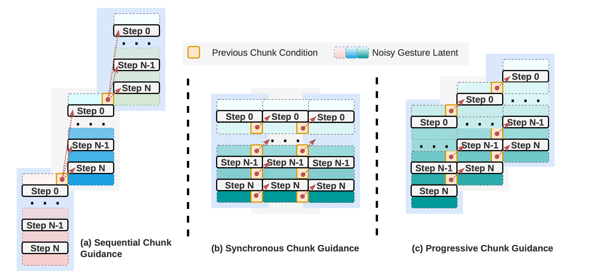
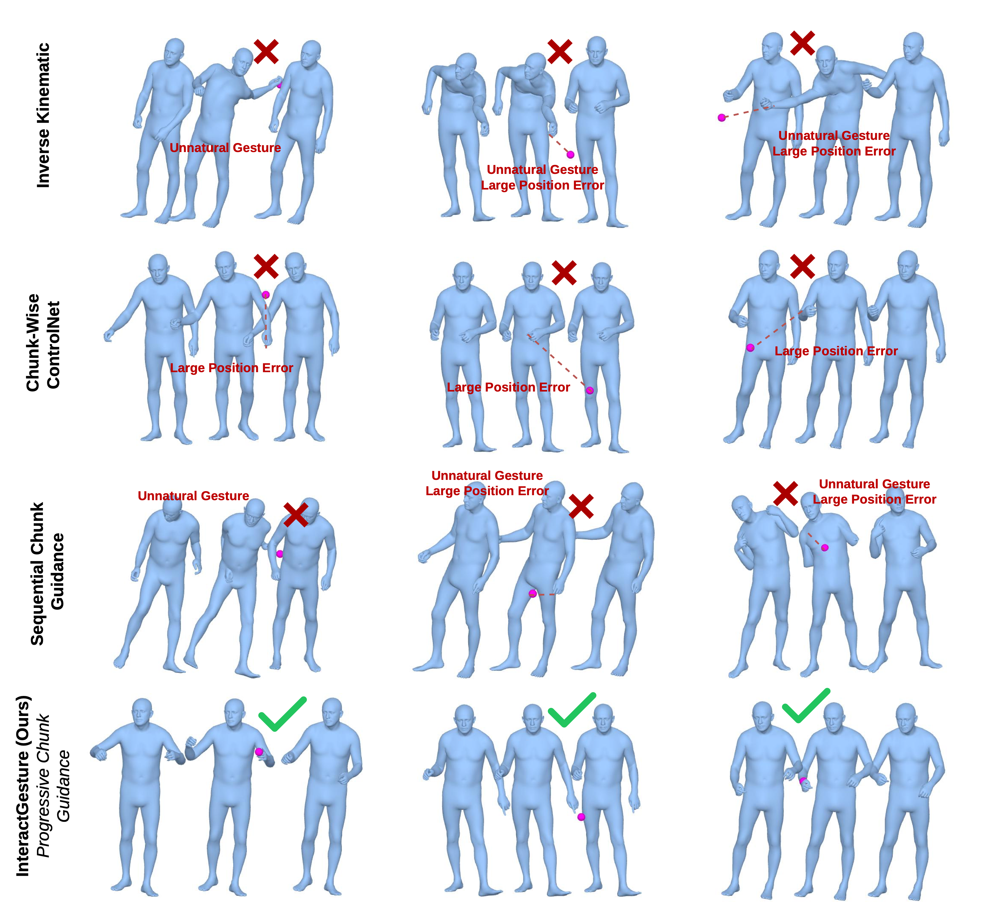

Predict
The speech-conditioned sampler estimates the next motion latent.
ECCV 2026 Workshop · Interactive Social Avatars ↗

One model, three forms of control. Place a joint at a keyframe, draw a continuous trajectory, or direct an arm toward a target.
InteractGesture guides individual joints toward user-defined 3D targets while preserving natural, speech-aligned motion—without retraining the gesture model.
01 / Motivation
Speech-driven models produce plausible gestures, but animators cannot tell a hand where to land or an arm where to point. Directly fixing poses after generation often looks unnatural, and independently generated chunks break motion around their boundaries.
InteractGesture solves both problems at inference time: spatial errors from the future flow through a differentiable motion decoder, while overlapping chunks remain editable as new audio arrives.
02 / Method
The pretrained generator stays frozen. At selected sampling steps, its latent estimate is decoded into SMPL-X joints, compared with the controlled targets, and adjusted using the spatial loss.

The speech-conditioned sampler estimates the next motion latent.
A differentiable RVQ-VAE and SMPL-X recover the 3D joints.
Spatial loss gradients move selected joints toward their targets.
03 / Streaming
Progressive Chunk Guidance introduces motion chunks with a staggered delay and keeps an active window editable. A target in the incoming chunk can therefore smooth the trajectory that leads into it—without waiting for the full speech sequence.

04 / Results
On BEAT2, progressive guidance reaches spatial targets far more accurately than sequential guidance, inverse kinematics, or chunk-wise ControlNet—while retaining the best generated-motion FGD.
6.34 cm
Progressive streaming guidance, down from 11.70 cm with sequential guidance.
0.431
Best FGD among generated methods; lower indicates more natural motion.
83.9%
Compared with 2.4% for the chunk-wise ControlNet baseline.

In one sentence